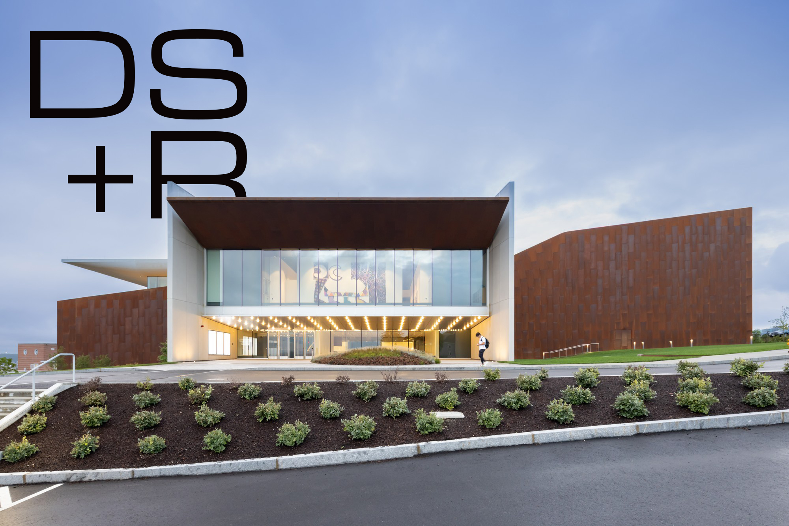
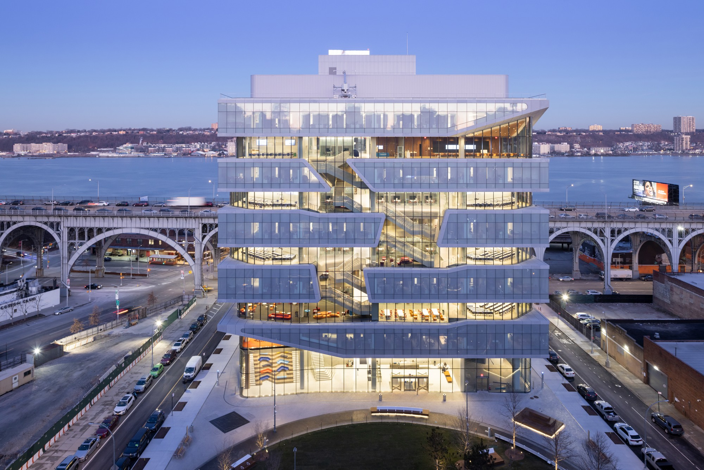
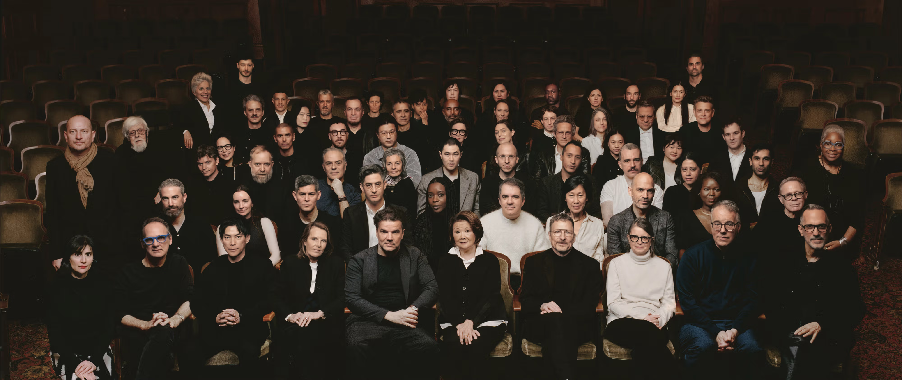
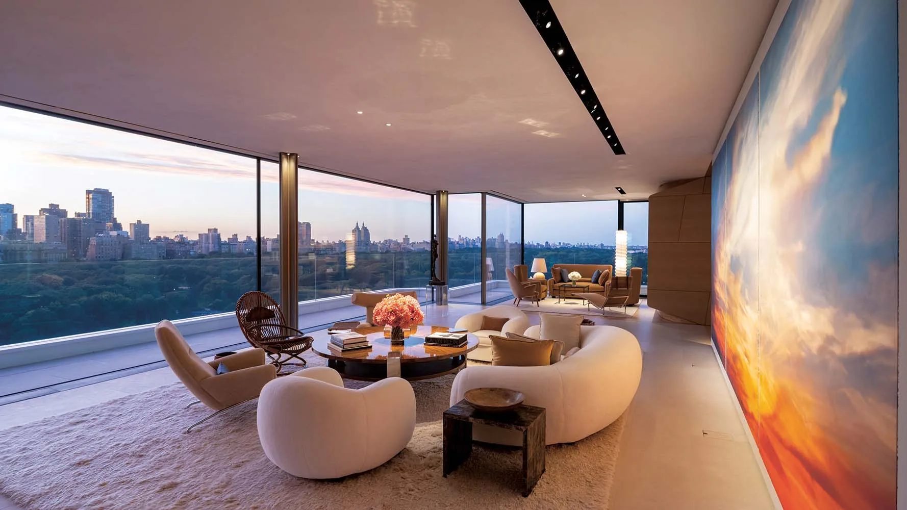

Diller Scofidio + Renfro is an American interdisciplinary design studio which integrates architecture, the visual arts, and the performing arts. Based in New York City, the studio was founded by architects Elizabeth Diller and Ricardo Scofidio in 1981. Charles Renfro joined in 1997, and was named partner in 2004.
recent
news
 A Warehouse is ConvertedInto theNew Home for Architecture at MIT
A Warehouse is ConvertedInto theNew Home for Architecture at MIT

Pin-Up’sNYC Architects
Room witha view